Código
ggplot(data = mpg)ggplot2O ggplot2 é um dos pacotes mais importantes já criados para o R. Mais do que uma simples ferramenta de visualização, ele representa uma nova forma de pensar gráficos, baseada em teoria estatística sólida e em um ecossistema que mudou a cultura da ciência de dados.
Nesta introdução, veremos a história do ggplot2, sua importância, seu criador Hadley Wickham, e por que o pacote nunca foi superado.
ggplot2O ggplot2 foi criado por Hadley Wickham, estatístico e cientista da computação da Nova Zelândia, hoje uma das figuras mais influentes na ciência de dados.
A história do ggplot2 passou pelos seguintes:
ggplot2Antes do ggplot2, existiam duas grandes opções:
- Base R – flexível, mas exigia muito código para customizações.
- Lattice – mais estruturado, porém rígido e pouco intuitivo.
O ggplot2 revolucionou ao trazer:
- Uma sintaxe consistente e baseada em teoria.
- A lógica de camadas para construir gráficos.
- Um ecossistema expansível (ggrepel, gganimate, patchwork).
Hoje, ele é:
- O pacote de visualização mais usado em R.
- Um dos mais baixados do CRAN.
- Ferramenta básica de ensino em ciência de dados.
- Tão influente que inspirou o plotnine no Python.
Hadley não parou no ggplot2: criou um ecossistema inteiro que mudou a análise de dados no R – o tidyverse.
Manipulação de dados
- dplyr – verbos intuitivos para transformar dados.
- tidyr – organização.
- readr – leitura rápida e padronizada.
- lubridate – datas e horários.
- forcats – fatores.
Estrutura e programação
- tibble – moderniza os data frames.
- purrr – programação funcional.
- stringr – manipulação de textos.
- rvest – web scraping.
- roxygen2 – documentação de pacotes.
O tidyverse (2016)
Reunião desses pacotes sob uma mesma filosofia:
- Dados arrumados
- Sintaxe coerente e intuitiva.
- Documentação clara e acessível.
Wilkinson em 2005 criou a Gramática dos Gráficos para descrever as características fundamentais que sustentam todos os gráficos estatísticos. A gramática dos gráficos é uma resposta à pergunta: o que é um gráfico estatístico? O ggplot2 se baseia na gramática de Wilkinson, dando ênfase à sobreposição de camadas e adaptando-a para uso no R.
Para entender a estrutura da Gramática dos Gráficos, analisamos as 7 partes componíveis que se unem como um conjunto de instruções sobre como desenhar um gráfico:
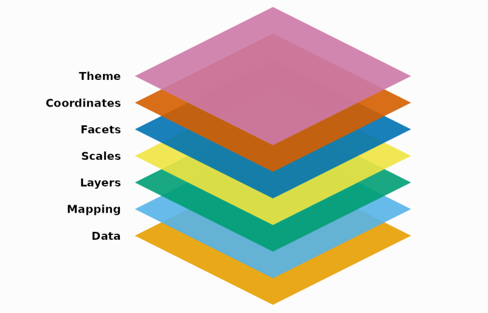
Esse esquema mostra sete losangos sobrepostos indicando as diferentes partes componíveis. De baixo para cima, os rótulos são: Dados, Mapeamento, Geometria, Escalas, Facetas, Coordenadas e Tema.
Entre esses componentes, o ggplot2 precisa de pelo menos três para produzir um gráfico: dados, um mapeamento e uma geometria. As escalas, facetas, coordenadas e temas possuem padrões razoáveis que evitam muito trabalho detalhado.
Como base de todo gráfico, o ggplot2 usa dados para construir a visualização. O sistema funciona melhor se os dados estiverem em uma estrutura retangular em que as linhas representam observações e as colunas representam variáveis.
O
ggplot2opera melhor com bases de dados em formato longo. Isso facilita a funcionalidade da próxima estrutura: mapeamento
Por exemplo, utilizemos a base de dados mpg (disponível no próprio pacote ggplot2 para exemplos introdutórios). Essa base contém informações sobre consumo de combustível de carros testados pelo EPA (Environmental Protection Agency) nos Estados Unidos.
Essa base é muito utilizada em exemplos por ser simples, realista e já vir pronta dentro do pacote. A base possui 234 observações (linhas) e 11 variáveis (colunas). Algumas das variáveis são:
| Variável | Descrição |
|---|---|
| year | Ano de fabricação (1999 ou 2008). |
| drv | Tipo de tração: f = dianteira, r = traseira, 4 = 4x4. |
| cty | Consumo de combustível na cidade (milhas por galão, mpg). |
| hwy | Consumo de combustível na estrada (milhas por galão, mpg). |
| class | Categoria do veículo (compact, suv, pickup, etc.). |
Considere o objetivo de estudar a relação entre o consumo de combustivel na estrada com o consumo de combustível na cidade. Além disso, avaliar como essa relação varia de acordo com o tipo da tração, o ano de fabricação do carro e a categoria.
O primeiro passo em todos os gráficos é passar os dados para a função ggplot(), que armazena a informação a ser usada pelas demais partes do sistema. Os dados entram no argumento data dessa função:
ggplot(data = mpg)A função
ggploté a função base de qualquer gráfico com o pacoteggplot2.
O mapeamento de um gráfico é um conjunto de instruções sobre como partes dos dados são associadas a atributos estéticos dos objetos geométricos. É como um “dicionário” que traduz os dados organizados para o sistema gráfico.
O mapeamento é feito com a função aes() no argumento mapping da função ggplot. Por exemplo, para mapear as colunas cty e hwy para os eixos x e y:
ggplot(data=mpg, mapping = aes(x = cty, y = hwy))Se você executar somente este comando em seu computador, verá o seguinte gráfico:
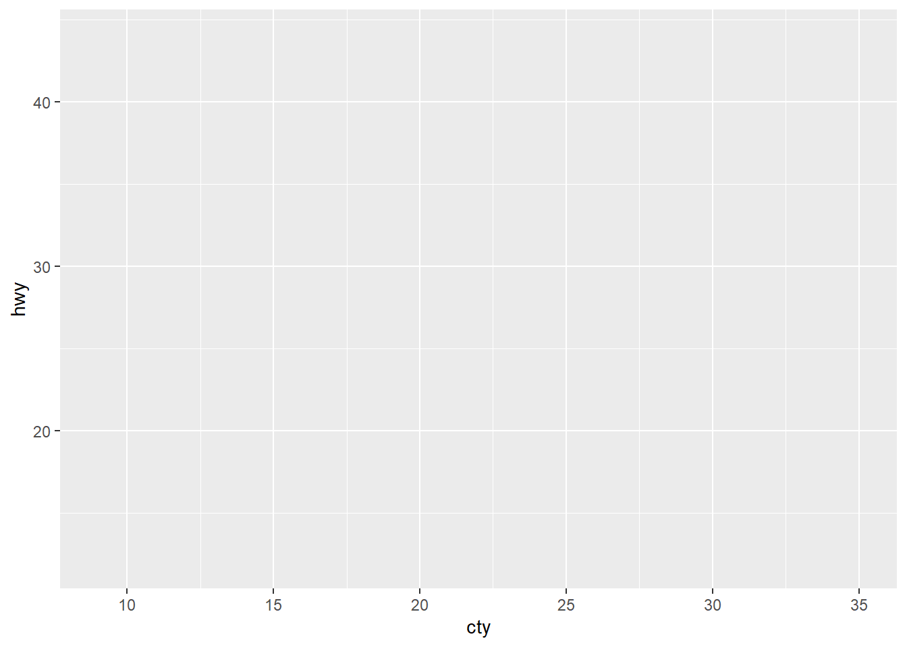
É a primeira camada do seu gráfico. Para adicionar qualquer nova camada a este gráfico, você deve sempre utilizar o OPERADOR DE ADIÇÃO “+”.
Assim o mapeamento expresso na função
ggplot()estabelece um mapeamento global do seu gráfico.
O coração de qualquer gráfico é a geometria. Ela pega os dados mapeados e os exibem de forma compreensível. A geometria, define como os dados são exibidos (pontos, linhas, retângulos…). Basicamente, a geometria é construída com o comando geom_*(). Podemos, por exemplo, exibir um gráfico de dispersão:
ggplot(data=mpg, aes(x=cty, y=hwy)) +
geom_point() 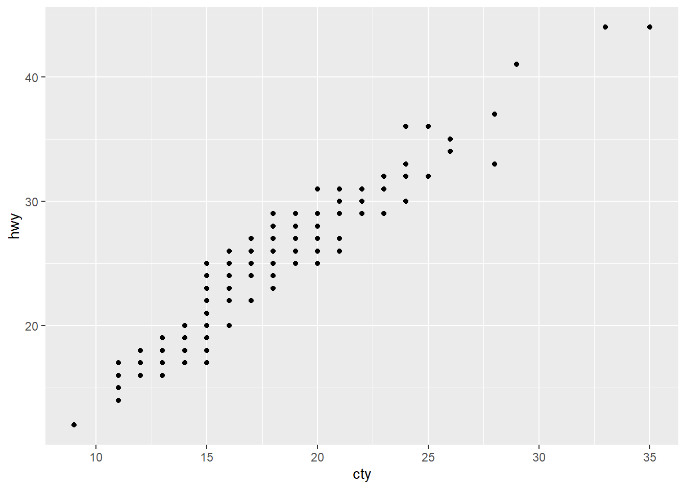
De um modo geral, cada gráfico diferente terá uma função geom_*() apropriada e um gráfico pode ser resultado da adição de várias funções geom_*(). As geometrias mais comuns são:
geom_point() → gráfico de dispersão (pontos)geom_line() → gráfico de linhasgeom_bar() → gráfico de barrasgeom_histogram() → histogramageom_boxplot() → boxplotgeom_density() → curva de densidadegeom_area() → área preenchida sob a curvageom_smooth() → linha de tendência / suavizaçãogeom_violin() → gráfico violino (distribuição de dados)Dentro das funções
geom_*também podemos fazer mapeamentos com o argumentomapping(aes=). Isso permite mapear variáveis dos dados para propriedades estéticas específicas da geometria.
As escalas são responsáveis por traduzir o que aparece no gráfico de volta para os dados. Normalmente aparecem como eixos ou legendas. Elas definem limites, intervalos, rótulos e cores.
Por exemplo, para colorir os pontos segundo a variável class:
ggplot(data=mpg, aes(x=cty, y=hwy, colour = class)) +
geom_point() +
scale_colour_viridis_d()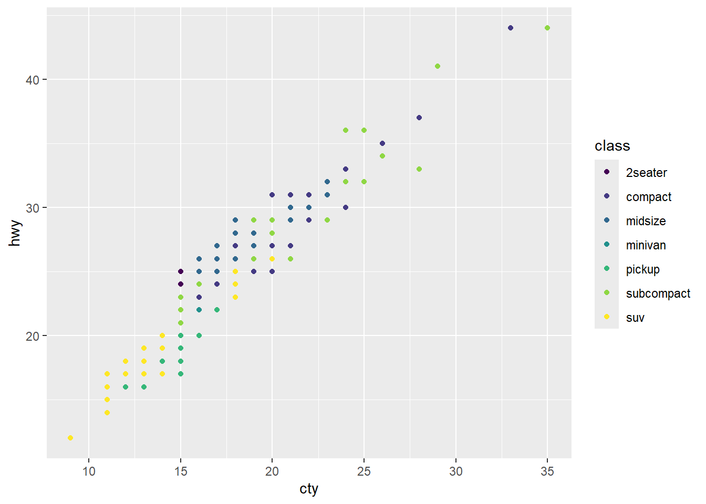
Nas escalas podemos ajustar como os valores dos dados são representados visualmente, controlando a aparência dos eixos. É possível definir intervalos, transformações, gradientes, paletas de cores, proporções de tamanhos e a maneira como variáveis contínuas ou categóricas são exibidas.
As facetas permitem criar múltiplos gráficos pequenos para subconjuntos dos dados. É uma forma poderosa de comparar padrões em grupos.
Exemplo: realizar o mesmo gráfico de dispersão mas agora estratificando por drv e year:
ggplot(mpg, aes(cty, hwy)) +
geom_point() +
facet_grid(year ~ drv)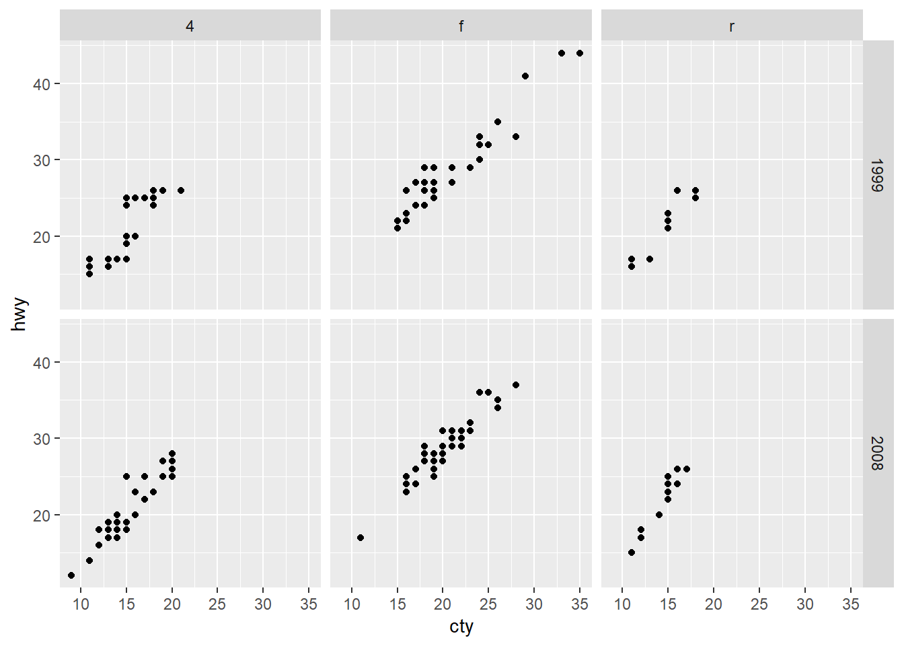
As facetas evitam que você tenha que criar vários códigos para replicar o mesmo gráfico.
O componente de coordenadas no ggplot2 define o sistema de referência usado para exibir os dados, determinando a forma do gráfico e como os elementos são posicionados. Podemos ajustar a proporção dos eixos, limitar os valores exibidos, inverter direções, transformar escalas (como logarítmica) ou alterar o tipo de coordenadas, por exemplo, de cartesiano para polar, permitindo representar os dados de maneiras diferentes.
Por exemplo, suponha que seja do interesse que uma unidade no eixo x tenha o mesmo comprimento visual que uma unidade no eixo y, mantendo proporções reais entre os dados. O comando a seguir faz isso:
ggplot(data=mpg, aes(x=cty, y=hwy)) +
geom_point() +
coord_fixed()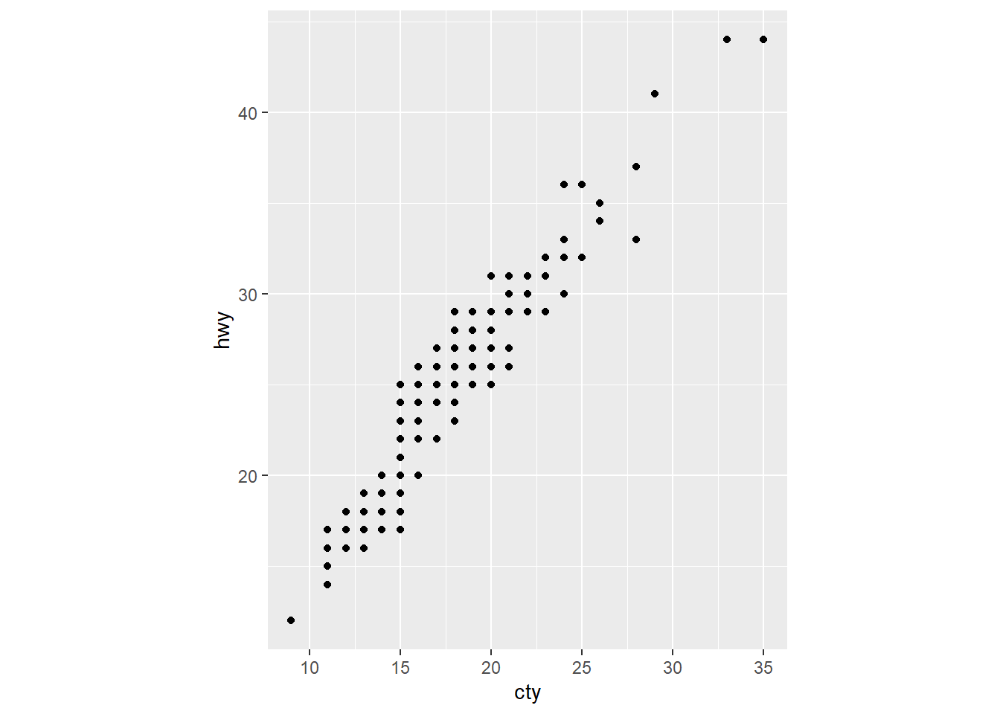
O sistema de temas controla todos os aspectos visuais que não dependem dos dados: posição de legendas, fundo, linhas dos eixos, etc.
Exemplo:
ggplot(mpg, aes(cty, hwy, colour = class)) +
geom_point() +
theme_minimal() +
theme(
legend.position = "top",
axis.line = element_line(linewidth = 0.75),
axis.line.x.bottom = element_line(colour = "blue")
)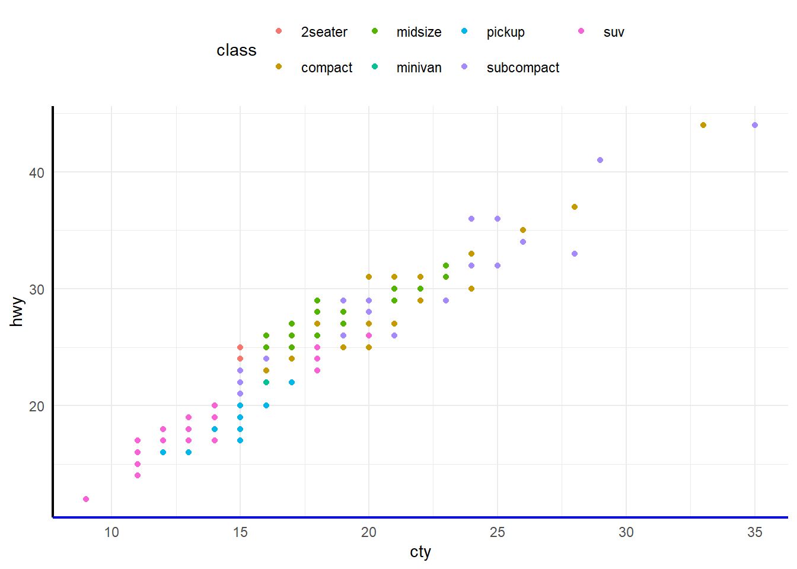
Por fim, todas as peças podem ser combinadas para criar gráficos personalizados:
ggplot(mpg, aes(cty, hwy)) +
geom_point(mapping = aes(colour = displ)) +
scale_colour_viridis_c() +
facet_grid(year ~ drv) +
coord_fixed() +
theme_bw() 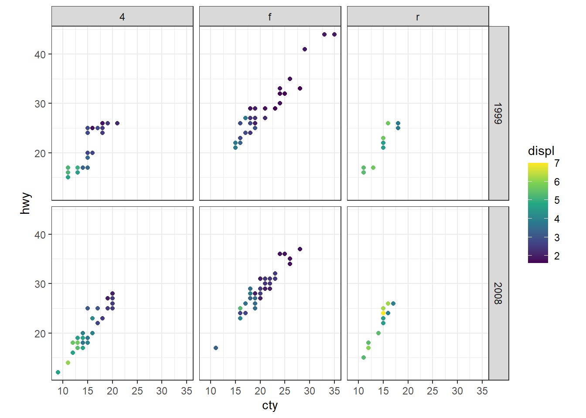
Diversos pacotes ampliam as funcionalidades do ggplot2, oferecendo recursos específicos para visualização, interatividade e apresentação de resultados.
ggsurvfit → criação de curvas de sobrevivência no estilo ggplot2, com tabelas de risco e recursos específicos para análise de sobrevivência.
ggiraph → adiciona interatividade aos gráficos do ggplot2, permitindo tooltips, efeitos de hover e seleção de elementos.
plotly → transforma gráficos do ggplot2 em gráficos interativos, permitindo zoom, hover, seleção e outras formas de interação.
ggrepel → posiciona automaticamente rótulos de texto, evitando sobreposição entre eles.
ggridges → cria gráficos de densidades sobrepostas (ridgeline plots), úteis para comparar distribuições entre grupos.
ggdist → oferece visualizações avançadas de distribuições e incerteza, como intervalos e half-eye plots.
ggforce → amplia o ggplot2 com novas geometrias, facetas e recursos para visualizações mais complexas.
gganimate → permite criar animações a partir de gráficos construídos com ggplot2.
patchwork → combina vários gráficos do ggplot2 em uma única figura de maneira simples e organizada.
ggtext → permite formatação avançada de textos nos gráficos utilizando Markdown e HTML.
ggthemes → disponibiliza temas e escalas adicionais para personalizar a aparência dos gráficos.
ggmosaic → permite construir gráficos de mosaico para representar relações entre variáveis categóricas.
Existem diversos materiais de referência e inspiração que podem ajudar na prática diária e no aprofundamento do conteúdo aprendido aqui. A seguir, segue uma seleção dos principais:
📎 Data Visualization Cheatsheet
ggplot2, mapeamentos estéticos, geometrias e funções auxiliares.ggplot2.📖 Disponível online gratuitamente
ggplot2.ggplot2: ELEGANT GRAPHICS FOR DATA ANALISYS📖 Disponível online gratuitamente
RNo R, podemos definir cores diretamente pelo nome, como por exemplo "red", "yellow" e "blue".
A lista completa de cores reconhecidas pelo R pode ser consultada em

Também podemos utilizar códigos hexadecimais, iniciados por # como, por exemplo, "#FF0000" (vermelho), "#0000FF" (azul) ou "#FFD700" (dourado). Mais exemplos de cores nessa codificação podem ser consultados aqui:
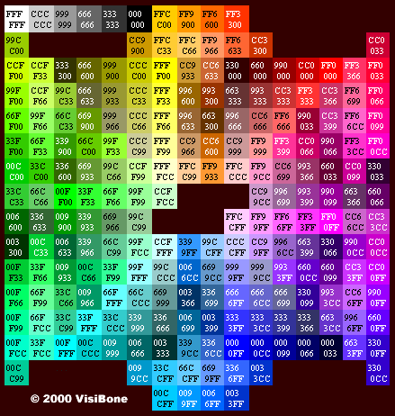
No ggplot2, as cores podem ser definidas ou modificadas por meio dos comandos apropriados. Por exemplo, scale_color_manual() e scale_fill_manual(), em que:
scale_color_manual() → define manualmente as cores de pontos, linhas e contornos.
scale_color_manual(values = c("red", "blue", "green")scale_fill_manual() → define manualmente as cores de preenchimento.
scale_fill_manual(values = c("red", "blue", "green")Existem diversos pacotes que disponibilizam conjuntos de cores já construídos.
RColorBrewerUm dos pacotes clássicos para escolha de paletas. As diferentes paletas estão disponíveis na seguinte imagem:
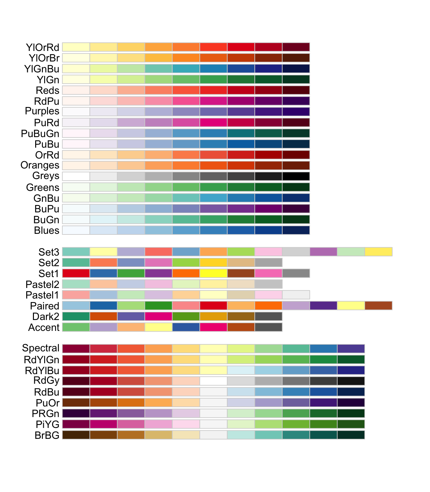
No ggplot2, usaremos os comandos
scale_color_brewer() → aplica uma paleta aos pontos, linhas e contornos.
scale_color_brewer(palette = "Set1")scale_fill_brewer() → aplica uma paleta aos preenchimentos.
scale_fill_brewer(palette = "Set2")Para visualizar as paletas disponíveis:
viridisMuito utilizada em visualização científica, com boas propriedades de percepção e acessibilidade. Seguem a paleta principal desse pacote:
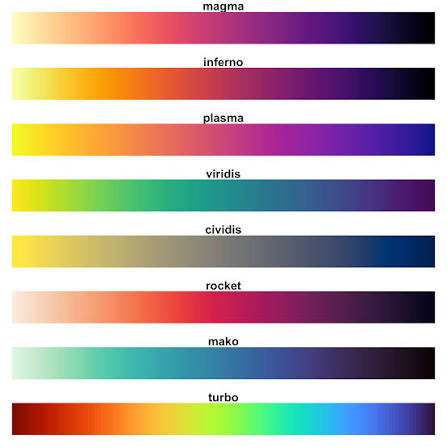
No ggplot2, usaremos estes comandos:
scale_color_viridis_d() → aplica uma paleta a uma variável discreta.
scale_color_viridis_d(option = "viridis")scale_fill_viridis_d() → aplica a paleta aos preenchimentos de uma variável discreta.
scale_fill_viridis_d(option = "viridis")scale_color_viridis_c() → aplica uma paleta a uma variável contínua.
scale_color_viridis_c(option = "viridis")scale_fill_viridis_c() → aplica a paleta aos preenchimentos de uma variável contínua.
scale_fill_viridis_c(option = "viridis")ggsciDisponibiliza paletas inspiradas em revistas e publicações científicas. As principais paletas podem ser consultadas no seguinte link GGSCI. No ggplot2, para cada paleta, utilize os comandos scale_color e scale_fill, como nos seguintes exemplos:
scale_color_lancet() → paleta inspirada na The Lancet.scale_fill_npg() → paleta inspirada na Nature Publishing Group.scale_color_nejm() → paleta inspirada no New England Journal of Medicine.scale_fill_jama() → paleta inspirada na JAMA.ggplot2 USADAS NESTA DISCIPLINAAo longo da disciplina, utilizaremos diversas funções do ggplot2 que formam a base da gramática dos gráficos.
Para facilitar o estudo, essas funções serão organizadas em sete grandes grupos:
Define o conjunto de dados utilizado no gráfico.
ggplot(data = Base_de_Dados, ...) → Inicia a construção do gráfico. O argumento data define a base de dados utilizada.Define como as variáveis dos dados são associadas às propriedades visuais do gráfico.
aes(x = Variavel, y = Variavel, fill = Variavel, ...) → Define os mapeamentos estéticos. x associa uma variável ao eixo x; y, ao eixo y; e fill, à cor de preenchimento.Define o tipo de representação gráfica utilizada.
geom_bar() → Cria um gráfico de barras e realiza automaticamente a contagem das observações de cada categoria.
geom_text(stat = "count", aes(label = after_stat(count)), vjust = -0.5, size = 3) → Adiciona textos ao gráfico. stat = "count" calcula as frequências; label = after_stat(count) utiliza essas frequências como rótulos; vjust controla a posição vertical; e size controla o tamanho do texto.
Controla como os dados são apresentados nos eixos, cores e demais propriedades visuais.
xlab("nome_do_eixo_x") → Define o título do eixo x.
ylab("nome_do_eixo_y") → Define o título do eixo y.
scale_fill_manual(values = c(...)) → Define manualmente as cores de preenchimento. O argumento values recebe as cores que serão utilizadas nas categorias.
scale_fill_brewer(palette = "...") → Utiliza uma paleta do RColorBrewer. O argumento palette define a paleta utilizada.
scale_fill_viridis_d(option = "...") → Utiliza uma paleta discreta do viridis. O argumento option define a paleta utilizada.
Permite dividir o gráfico em múltiplos painéis de acordo com uma ou mais variáveis.
Nenhum comando utilizado até o momento.
Define o sistema de coordenadas e a orientação utilizada na representação gráfica.
Nenhum comando utilizado até o momento.
Controla a aparência geral do gráfico, incluindo fundo, grades, textos, legenda e demais elementos visuais que não representam diretamente os dados.
theme_gray() → Tema padrão do ggplot2, com fundo cinza e grades brancas.
theme_bw() → Fundo branco com bordas e grades, produzindo um gráfico mais limpo.
theme_classic() → Fundo branco, sem grades, mantendo apenas os eixos.
theme_minimal() → Tema minimalista, com poucos elementos visuais.
theme_light() → Fundo claro com grades leves.
theme_dark() → Fundo escuro com grades claras.
theme_void() → Remove praticamente todos os elementos do gráfico, incluindo eixos, grades e fundo.
Todos esses temas permitem utilizar o argumento base_size para alterar proporcionalmente o tamanho dos textos do gráfico:
theme_bw(base_size = 14) → Aplica o tema e define o tamanho-base dos textos como 14.theme()theme(legend.position = "none") → Remove a legenda. Também podem ser utilizadas "top", "bottom", "left" e "right" para alterar sua posição.
theme(text = element_text(size = 14)) → Altera o tamanho de todos os textos do gráfico.
theme(axis.title = element_text(size = 16)) → Altera o tamanho dos títulos dos dois eixos.
theme(axis.title.x = element_text(size = 16)) → Altera o tamanho do título do eixo x.
theme(axis.title.y = element_text(size = 16)) → Altera o tamanho do título do eixo y.
theme(axis.text = element_text(size = 14)) → Altera o tamanho dos valores ou categorias apresentados nos dois eixos.
theme(axis.text.x = element_text(size = 14)) → Altera o tamanho dos valores ou categorias do eixo x.
theme(axis.text.y = element_text(size = 14)) → Altera o tamanho dos valores ou categorias do eixo y.
theme(plot.title = element_text(size = 18)) → Altera o tamanho do título principal do gráfico.
theme(plot.subtitle = element_text(size = 16)) → Altera o tamanho do subtítulo do gráfico.
theme(plot.caption = element_text(size = 12)) → Altera o tamanho do texto de rodapé do gráfico.
theme(legend.title = element_text(size = 14)) → Altera o tamanho do título da legenda.
theme(legend.text = element_text(size = 12)) → Altera o tamanho dos textos das categorias da legenda.
theme(strip.text = element_text(size = 14)) → Altera o tamanho dos títulos dos painéis criados por facetas.
element_text()Os comandos anteriores podem ser combinados com outros argumentos de element_text():
element_text(size = 14) → Altera o tamanho do texto.
element_text(color = "red") → Altera a cor do texto.
element_text(face = "bold") → Coloca o texto em negrito. Também podem ser utilizados "plain", "italic" e "bold.italic".
element_text(angle = 45) → Rotaciona o texto pelo ângulo especificado.
element_text(hjust = 0.5) → Controla o alinhamento horizontal do texto.
element_text(vjust = 0.5) → Controla o alinhamento vertical do texto.
Funções que não pertencem diretamente ao ggplot2, mas são úteis na preparação das variáveis para a construção dos gráficos.
factor(Variavel, levels = c(...)) → Transforma ou redefine uma variável como fator. O argumento levels determina a ordem das categorias.
fct_infreq(Variavel) → Ordena as categorias de uma variável da maior para a menor frequência.
fct_rev(Variavel) → Inverte a ordem dos níveis de uma variável. Com fct_rev(fct_infreq(Variavel)), as categorias são apresentadas da menor para a maior frequência.